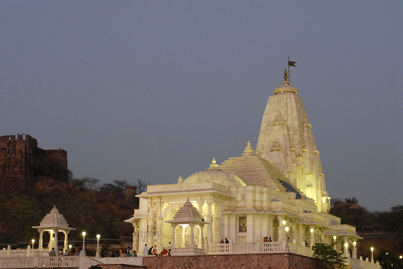

Birla Mandir is a very famous temple and a highly-regarded pilgrimage for the Hindus. Birla Mandir in Jaipur is a marvellous structure that speaks of beauty in every possible way. Built of marble this beautiful temple is visited by thousands of devotees every day. This temple is surrounded by lush gardens on all sides and is a treat for the eyes to see such colourful flowers all in one place. The temple has three domes and has beautiful drawings and carvings all around. The walls are covered with quotes and sayings from well-known preachers and holy men. This temple is different from other temples and believes in equality of all religions and the domes are meant to signify that. Birla Mandir is a landmark in Jaipur and a must visit destination for every visitor. The walls of this temple have a lot to offer to the people who believe in mythology and the preaching of our wise ancestors.
